8 Multivariate mixed models
8.1 Lecture
Amazing beasties and crazy animals
add a comparison of lrt
8.2 Practical
In this practical, we have collected data on the amazing blue dragon of the East that roam the sky at night.
We will use two different 📦 to fit more complex models that are not possible with lmer() from lme4 📦 (Bates et al. 2021). We will use:
-
asreml-Rwhich is a commercial software developed by VSNi (Butler 2021).ASRemlfit models using a maximum likelihood approach, is quite flexible and fast. -
MCMCglmmwhich is free and open-source and fit model using a Bayesian approach (Hadfield 2010). It is super flexible and allow to fit a wide diversity of distribution.
The aims of the practical are to learn:
- How to phrase questions of interest in terms of variances and covariances (or derived correlations or regressions);
- How to incorporate more advanced model structures, such as:
- Fixed effects that apply only to a subset of the response traits;
- Traits which are measured a different number of times (e.g., repeated measures of behaviour and a single value of breeding success);
- Hypothesis testing using likelihood ratio tests.
8.2.1 R packages needed
First we load required libraries
8.2.2 The blue dragon of the East
For this practical, we have collected data on the amazing blue dragon of the East that roam the sky at night.

We tagged all dragons individually when they hatch from their eggs. Here, we concentrate on female dragon that produce a single clucth of eggs per mating seasons. Adult femlae blue dragons need to explore vast amount of land to find a compatible male. We thus hypothesized that maximum flight speed as well as exploration are key traits to determine fitness. We were able to obtain repeated measures of flying speed and exploration on 80 adult females during one mating season and also measure the number of egg layed at the end of the season.
Each females was capture 4 times during the season and each time we measured the maximum flying speed using a wind tunnel and exploration using a openfield test.
The data frame has 6 variables:
- ID: Individual identity
- assay_rep: the repeat number of the behavioural assay
- max_speed: maximum flying speed
- exploration:
- eggs: measure of reproductive succes measured only once per individual
- body_size: individual body size measured on the day of the test
'data.frame': 320 obs. of 6 variables:
$ ID : chr "S_1" "S_1" "S_1" "S_1" ...
$ assay_rep : int 1 2 3 4 1 2 3 4 1 2 ...
$ max_speed : num 58.7 57.9 64.3 61.4 65.5 ...
$ exploration: num 126 125 127 127 125 ...
$ eggs : int 39 NA NA NA 56 NA NA NA 51 NA ...
$ body_size : num 21.7 21.5 21.3 20.8 25.7 ...To help with convergence of the model, and also help with parameter interpretation, we will first scale our covariates.
8.2.3 Multiple univariate models
We first use the lme4 📦 to determine the proportion of phenotypic variation (adjusted for fixed effects) that is due to differences among individuals, separately for each trait with repeated measures.
8.2.3.1 Flying speed
Our model includes fixed effects of the assay repeat number (centred) and individual body size (centred and scaled to standard deviation units), as we wish to control for any systematic effects of these variables on individual behaviour. Be aware that controlling variables are at your discretion — for example, while we want to characterise among-individual variance in flying speed after controlling for size effects in this study, others may wish to characterise among-individual variance in flying speed without such control. Using techniques shown later in the practical, it would be entirely possible to characterise both among-individual variance in flying speed and in size, and the among-individual covariance between these measurements.
lmer_f <- lmer(max_speed ~ assay_rep_sc + body_size_sc + (1 | ID),
data = df_dragons
)
par(mfrow = c(1, 3))
plot(resid(lmer_f, type = "pearson") ~ fitted(lmer_f))
qqnorm(residuals(lmer_f))
qqline(residuals(lmer_f))
hist(residuals(lmer_f))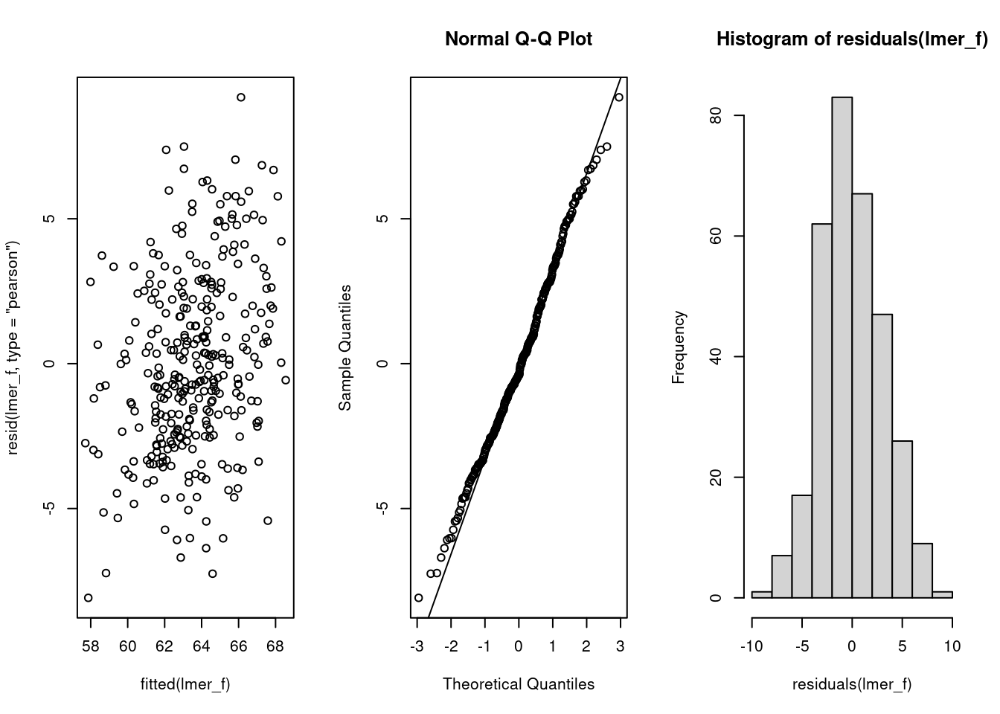
summary(lmer_f)Linear mixed model fit by REML. t-tests use Satterthwaite's method [
lmerModLmerTest]
Formula: max_speed ~ assay_rep_sc + body_size_sc + (1 | ID)
Data: df_dragons
REML criterion at convergence: 1791.4
Scaled residuals:
Min 1Q Median 3Q Max
-2.3645 -0.6496 -0.1154 0.6463 2.6894
Random effects:
Groups Name Variance Std.Dev.
ID (Intercept) 6.951 2.636
Residual 11.682 3.418
Number of obs: 320, groups: ID, 80
Fixed effects:
Estimate Std. Error df t value Pr(>|t|)
(Intercept) 63.5344 0.3513 78.0954 180.870 <2e-16 ***
assay_rep_sc -0.1519 0.1709 238.9807 -0.889 0.375
body_size_sc 0.4468 0.3445 88.0328 1.297 0.198
---
Signif. codes: 0 '***' 0.001 '**' 0.01 '*' 0.05 '.' 0.1 ' ' 1
Correlation of Fixed Effects:
(Intr) assy__
assay_rp_sc 0.000
body_siz_sc 0.000 -0.002Having examined diagnostic plots of the model fit, we can check the model summary. We are interested in the random effects section of the lme4 model output (specifically the variance component — note that the standard deviation here is simply the square root of the variance). Evidence for ‘animal personality’ (or ‘consistent among-individual differences in behaviour’) in the literature is largely taken from the repeatability of behaviorual traits: we can compute this repeatability (also known as the intraclass correlation coefficient) by dividing the variance in the trait due to differences among individuals (\(V_{ID}\)) by the total phenotypic variance after accounting for the fixed effects (\(V_{ID} + V_{residual}\) ).
| ID | Residual | repeatability |
|---|---|---|
| 6.951 | 11.682 | 0.373 |
So we can see that 37.31% of the phenotypic variation in boldness (having controlled for body size and assay repeat number) is due to differences among individuals.
8.2.3.2 Exploration
lmer_e <- lmer(exploration ~ assay_rep_sc + body_size_sc + (1 | ID),
data = df_dragons
)
par(mfrow = c(1, 3))
plot(resid(lmer_e, type = "pearson") ~ fitted(lmer_e))
qqnorm(residuals(lmer_e))
qqline(residuals(lmer_e))
hist(residuals(lmer_e))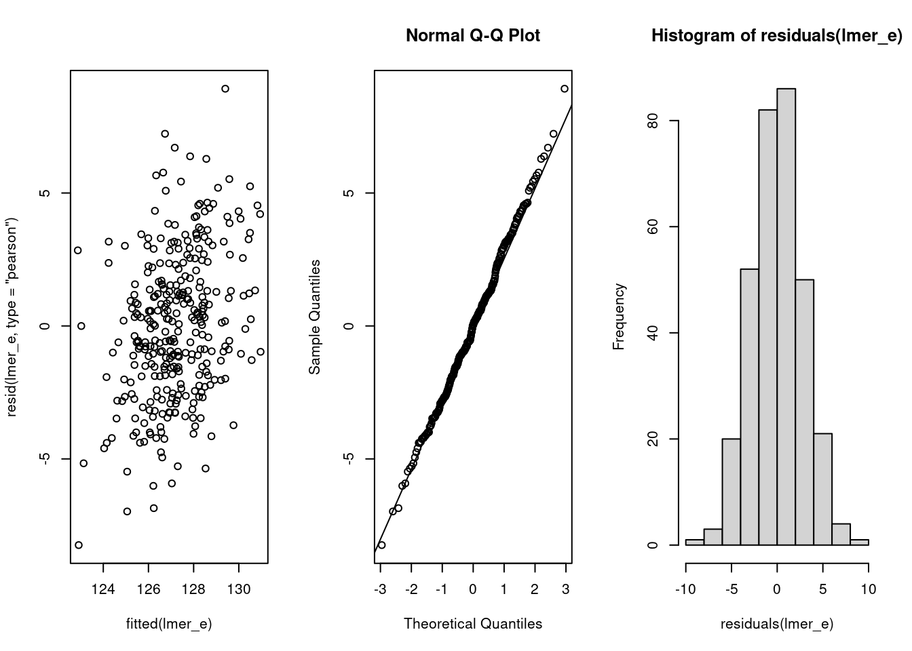
summary(lmer_e)Linear mixed model fit by REML. t-tests use Satterthwaite's method [
lmerModLmerTest]
Formula: exploration ~ assay_rep_sc + body_size_sc + (1 | ID)
Data: df_dragons
REML criterion at convergence: 1691.2
Scaled residuals:
Min 1Q Median 3Q Max
-2.73290 -0.62520 0.01635 0.55523 2.95896
Random effects:
Groups Name Variance Std.Dev.
ID (Intercept) 3.623 1.903
Residual 9.091 3.015
Number of obs: 320, groups: ID, 80
Fixed effects:
Estimate Std. Error df t value Pr(>|t|)
(Intercept) 127.22524 0.27148 78.08871 468.639 <2e-16 ***
assay_rep_sc -0.07811 0.15076 238.99943 -0.518 0.605
body_size_sc 0.26114 0.26806 85.68180 0.974 0.333
---
Signif. codes: 0 '***' 0.001 '**' 0.01 '*' 0.05 '.' 0.1 ' ' 1
Correlation of Fixed Effects:
(Intr) assy__
assay_rp_sc 0.000
body_siz_sc 0.000 -0.002So the model looks good and we can see our estimates for both fixed and random effects. We can now estimate the repeatbility of exploration.
| ID | Residual | repeatability |
|---|---|---|
| 3.623 | 9.091 | 0.285 |
Both of traits of interest are repeatable at the among-individual level. So, the remaining question is estimating the relation between these two traits. Are individuals that are consistently faster than average also more exploratory than average (and vice versa)?
8.2.3.3 Correlation using BLUPs
Using BLUPs to estimate correlations between traits or to further investigate biological associations can lead to spurious results and anticonservative hypothesis tests and narrow confidence intervals. Hadfield et al. (2010) discuss the problem as well as present some alternative method to avoid the problem using Bayesian methods. However, it is always preferable to use multivariate models when possible.
We need to create a data frame that contain the BLUPs from both univariate models.
df_blups_fe <- merge(
as.data.frame(ranef(lmer_f)),
as.data.frame(ranef(lmer_e)),
by = "grp"
) %>%
mutate(
speed = condval.x,
exploration = condval.y
)We can now test the correlation among-individual between flying speed and exploration.
Pearson's product-moment correlation
data: speed and exploration
t = 3.2131, df = 78, p-value = 0.00191
alternative hypothesis: true correlation is not equal to 0
95 percent confidence interval:
0.1320924 0.5223645
sample estimates:
cor
0.3418867 ggplot(df_blups_fe, aes(x = exploration, y = speed)) +
geom_point() +
labs(xlab = "Exploration (BLUP)", ylab = "Flying speed (BLUP)") +
theme_classic()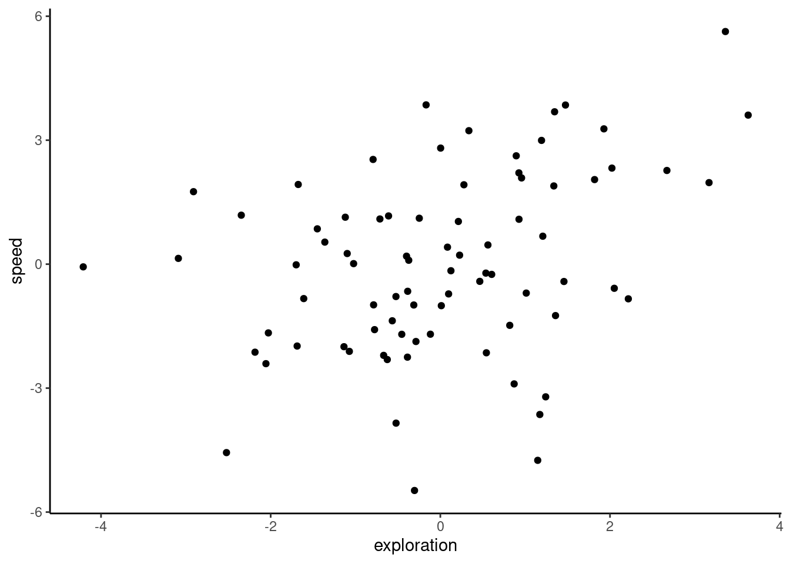
As you can see, we get a positive correlation with a very small p-value (P = 0.00191), indicating that these traits are involved in a behavioural syndrome. While the correlation itself is fairly weak ($r = 0.342), it appears to be highly significant, and suggests that individuals that are faster than average also tend to be more exploratory than average. However, as discussed in Hadfield et al. (2010) and Houslay and Wilson (2017), using BLUPs in this way leads to anticonservative significance tests. This is because the error inherent in their prediction is not carried forward from the lmer models to the subsequent analysis (in this case, a correlation test). To illustrate this point quickly, below we plot the individual estimates along with their associated standard errors.
ggplot(df_blups_fe, aes(x = exploration, y = speed)) +
geom_point() +
geom_linerange(aes(
xmin = exploration - condsd.x,
xmax = exploration + condsd.x
)) +
geom_linerange(aes(
ymin = speed - condsd.y,
ymax = speed + condsd.y
)) +
labs(
xlab = "Exploration (BLUP +/- SE)",
ylab = "Flying speed (BLUP +/- SE)"
) +
theme_classic()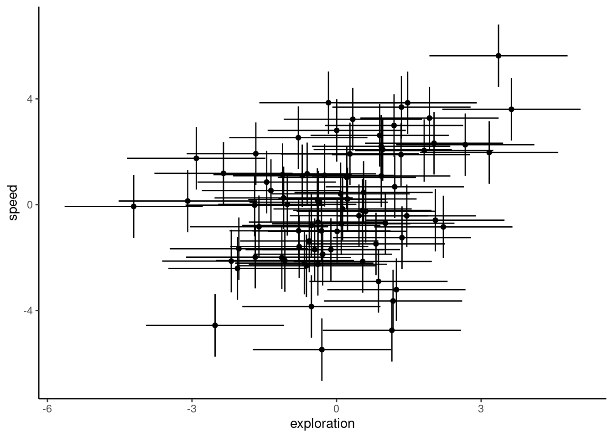
8.2.4 Multivariate approach
8.2.4.1 Based on ASRemlR
The correct approach for testing the hypothesised relation between speed and exploration uses both response variables in a two-trait (‘bivariate’) mixed model. This model estimates the among-individual variance for each response variable (and the covariance between them). Separate (co)variances are also fitted for the residual variation. The bivariate model also allows for fixed effects to be fitted on both response variables. We set up our model using the asreml function call, with our bivariate response variable being exploration and flying speed bound together using cbind. You will also note that we scale our response variables, meaning that each is centred at their mean value and standardised to units of 1 standard deviation. This is not essential, but simply makes it easier for the model to be fit. Scaling the response variables also aids our understanding of the output, as both flying speed and exploration are now on the same scale.
asreml can be a bit specific sometime and random effects should absolutely be factor and not character or integer
df_dragons <- df_dragons %>%
mutate(
ID = as.factor(ID),
speed_sc = scale(max_speed),
exploration_sc = scale(exploration)
)
asr_us <- asreml(
cbind(speed_sc, exploration_sc) ~ trait +
trait:assay_rep_sc + trait:body_size_sc,
random = ~ ID:us(trait),
residual = ~ units:us(trait),
data = df_dragons,
maxiter = 100
)Model fitted using the sigma parameterization.
ASReml 4.1.0 Mon Jan 22 00:06:55 2024
LogLik Sigma2 DF wall cpu
1 -333.105 1.0 634 00:06:55 0.0
2 -303.637 1.0 634 00:06:55 0.0
3 -274.849 1.0 634 00:06:55 0.0
4 -260.243 1.0 634 00:06:55 0.0
5 -256.118 1.0 634 00:06:55 0.0
6 -255.891 1.0 634 00:06:55 0.0
7 -255.889 1.0 634 00:06:55 0.0On the right hand side of our model formula, we use the trait keyword to specify that this is a multivariate model — trait itself tells the model to give us the intercept for each trait. We then interact trait with the fixed effects, assay_rep_sc and body_size_sc, so that we get estimates for the effect of these variables on each of teh 2 traits. The random effects structure starts with the random effects, where we tell the model to fit an unstructured (us) covariance matrix for the grouping variable ID. This means that the variance in exploration due to differences among individuals, the variance in boldness due to differences among individuals, and the covariance between these variances will be estimated. Next, we set a structure for the residual variation (residual), which is also sometimes known as the within-individual variation. As we have repeated measures for both traits at the individual level, we also set an unstructured covariance matrix, which estimates the residual variance for each trait and also allows the residuals to covary across the two traits. Finally, we provide the name of the data frame, and a maximum number of iterations for ASReml to attempt to fit the model. After the model has been fit by ASReml, we can check the fit using the same type of model diagnostic plots as we use for lme4:
par(mfrow = c(1, 3))
plot(residuals(asr_us) ~ fitted(asr_us))
qqnorm(residuals(asr_us))
qqline(residuals(asr_us))
hist(residuals(asr_us))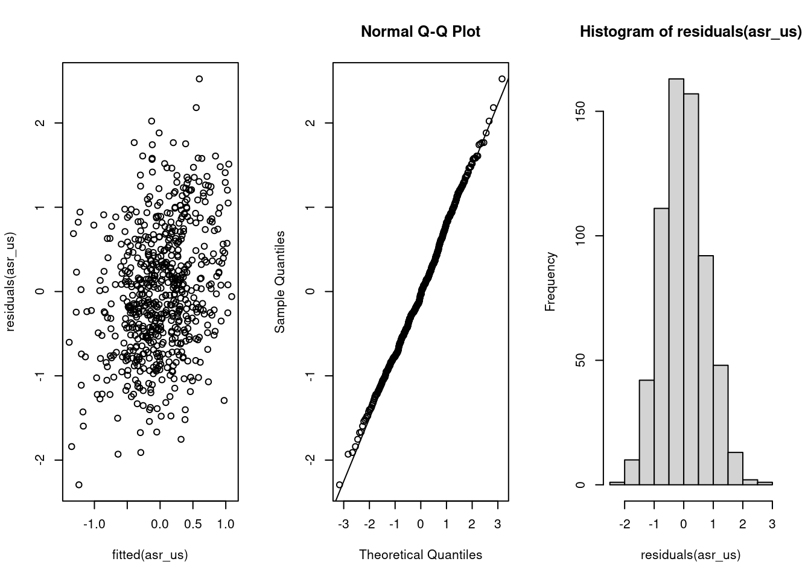
The summary part of the ASReml model fit contains a large amount of information, so it is best to look only at certain parts of it at a single time. While we are not particularly interested in the fixed effects for current purposes, you can inspect these using the following code to check whether there were any large effects of assay repeat or body size on either trait:
summary(asr_us, coef = TRUE)$coef.fixed solution std error z.ratio
trait_speed_sc:body_size_sc 1.040579e-01 0.07972962 1.305135e+00
trait_exploration_sc:body_size_sc 7.269022e-02 0.07533421 9.649033e-01
trait_speed_sc:assay_rep_sc -3.521261e-02 0.03960492 -8.890967e-01
trait_exploration_sc:assay_rep_sc -2.195541e-02 0.04238056 -5.180538e-01
trait_speed_sc -1.820461e-16 0.08140684 -2.236251e-15
trait_exploration_sc -2.853753e-16 0.07631479 -3.739449e-15wald(asr_us, ssType = "conditional", denDF = "numeric")Model fitted using the sigma parameterization.
ASReml 4.1.0 Mon Jan 22 00:06:56 2024
LogLik Sigma2 DF wall cpu
1 -255.889 1.0 634 00:06:56 0.0
2 -255.889 1.0 634 00:06:56 0.0
Calculating denominator DF$Wald
[0;34m
Wald tests for fixed effects.[0m
[0;34mResponse: cbind(speed_sc, exploration_sc)[0m
Df denDF F.inc F.con Margin Pr
trait 2 77.1 0.0000 0.0000 1.00000
trait:assay_rep_sc 2 237.9 0.3955 0.3984 B 0.67184
trait:body_size_sc 2 86.6 0.9871 0.9871 B 0.37679
$stratumVariances
NULLWe can see that there is a separate intercept for both personality traits (no surprise that these are very close to zero, given that we mean-centred and scaled each trait before fitting the model), and an estimate of the effect of assay repeat and body size on both traits. None of these appear to be large effects, so let’s move on to the more interesting parts — the random effects estimates:
summary(asr_us)$varcomp component std.error z.ratio
ID:trait!trait_speed_sc:speed_sc 0.37333063 0.08607123 4.337461
ID:trait!trait_exploration_sc:speed_sc 0.08838639 0.06067006 1.456837
ID:trait!trait_exploration_sc:exploration_sc 0.28631012 0.07637247 3.748865
units:trait!R 1.00000000 NA NA
units:trait!trait_speed_sc:speed_sc 0.62741689 0.05740281 10.930073
units:trait!trait_exploration_sc:speed_sc 0.32632113 0.04829175 6.757286
units:trait!trait_exploration_sc:exploration_sc 0.71844189 0.06572780 10.930563
bound %ch
ID:trait!trait_speed_sc:speed_sc P 0
ID:trait!trait_exploration_sc:speed_sc P 0
ID:trait!trait_exploration_sc:exploration_sc P 0
units:trait!R F 0
units:trait!trait_speed_sc:speed_sc P 0
units:trait!trait_exploration_sc:speed_sc P 0
units:trait!trait_exploration_sc:exploration_sc P 0In the above summary table, we have the among-individual (co)variances listed first (starting with ID), then the residual (or within-individual) (co)variances (starting with R). You will notice that the variance estimates here are actually close to the lme4 repeatability estimates, because our response variables were scaled to phenotypic standard deviations. We can also find the ‘adjusted repeatability’ (i.e., the repeatability conditional on the fixed effects) for each trait by dividing its among-individual variance estimate by the sum of its among-individual and residual variances. Here, we use the vpredict function to estimate the repeatability and its standard error for each trait, conditional on the effects of assay repeat and body size. For this function, we provide the name of the model object, followed by a name that we want to give the estimate being returned, and a formula for the calculation. Each ‘V’ term in the formula refers to a variance component, using its position in the model summary shown above.
vpredict(asr_us, rep_speed ~ V1 / (V1 + V5)) Estimate SE
rep_speed 0.3730518 0.06124032vpredict(asr_us, rep_expl ~ V3 / (V3 + V7)) Estimate SE
rep_expl 0.284956 0.06113539We can also use this function to calculate the estimate and standard error of the correlation from our model (co)variances. We do this by specifying the formula for the correlation:
Estimate SE
cor_expl_speed 0.2703462 0.1594097In this case, the estimate is similar (here, slightly lower) than our correlation estimate using BLUPs. However, if we consider confidence intervals as +/- 1.96 SE around the estimate, the lower bound of the confidence interval would actually be -0.0421. With confidence intervals straddling zero, we would conclude that this correlation is likely non-significant. As the use of standard errors in this way is only approximate, we should also test our hypothesis formally using likelihood ratio tests.
8.2.4.1.1 Hypothesis testing
We can now test the statistical significance of this correlation directly, by fitting a second model without the among-individual covariance between our two traits, and then using a likelihood ratio test to determine whether the model with the covariance produces a better fit. Here, we use the idh structure for our random effects. This stands for ‘identity matrix’ (i.e., with 0s on the off-diagonals) with heterogeneous variances (i.e., the variance components for our two response traits are allowed to be different from one another). The rest of the model is identical to the previous version.
asr_idh <- asreml(
cbind(speed_sc, exploration_sc) ~ trait +
trait:assay_rep_sc + trait:body_size_sc,
random = ~ ID:idh(trait),
residual = ~ units:us(trait),
data = df_dragons,
maxiter = 100
)Model fitted using the sigma parameterization.
ASReml 4.1.0 Mon Jan 22 00:06:56 2024
LogLik Sigma2 DF wall cpu
1 -327.051 1.0 634 00:06:56 0.0
2 -299.874 1.0 634 00:06:56 0.0
3 -273.689 1.0 634 00:06:56 0.0
4 -260.838 1.0 634 00:06:56 0.0
5 -257.331 1.0 634 00:06:56 0.0
6 -257.120 1.0 634 00:06:56 0.0
7 -257.118 1.0 634 00:06:56 0.0The likelihood ratio test is calculated as twice the difference between model log-likelihoods, on a single degree of freedom (the covariance term):
(p_biv <- pchisq(2 * (asr_us$loglik - asr_idh$loglik),
df = 1,
lower.tail = FALSE
))[1] 0.1170385In sharp contrast to the highly-significant P-value given by a correlation test using BLUPs, here we find no evidence for a correlation between flying speed and exploration. To better understand why BLUPs produce an anticonservative p-value in comparison to multivariate models, we should plot the correlation estimates and their confidence intervals. The confidence intervals are taken directly from the cor.test function for BLUPs, and for ASReml they are calculated as 1.96 times the standard error from the vpredict function.
df_cor <- data.frame(
Method = c("ASReml", "BLUPs"),
Correlation = c(as.numeric(cor_fe[1]), cor_blups$estimate),
low = c(as.numeric(cor_fe[1] - 1.96 * cor_fe[2]), cor_blups$conf.int[1]),
high = c(as.numeric(cor_fe[1] + 1.96 * cor_fe[2]), cor_blups$conf.int[2])
)
ggplot(df_cor, aes(x = Method, y = Correlation)) +
geom_point() +
geom_linerange(aes(ymin = low, ymax = high)) +
ylim(-1, 1) +
geom_hline(yintercept = 0, linetype = 2) +
theme_classic()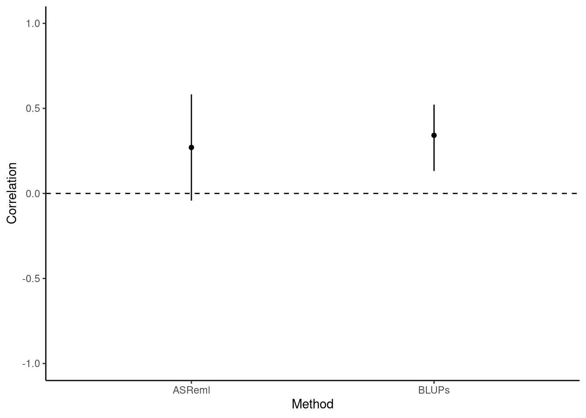
Here we can clearly see that the BLUPs method - having failed to carry through the error around the predictions of individual-level estimates - is anticonservative, with small confidence intervals and a correspondingly small P-value (P = 0.00191). Testing the syndrome directly in a bivariate model that retains all the data, by comparison, enables us to capture the true uncertainty about the estimate of the correlation. This is reflected in the larger confidence intervals and, in this case, the non-significant P-value (P = 0.117).
8.2.4.1.2 Conclusions
To conclude, then: we found that the correlation between flying speed and exploration tends to be positive among female blue dragon. This correlation is not statistically significant, and thus does not provide strong evidence. However, inappropriate analysis of BLUP extracted from univariate models would lead to a different (erroneous) conclusion.
8.2.4.2 Using MCMCglmm
In this section I present the code needed to fit the model and explain only the specific aspect of fittign and evaluating the models with MCMCglmm.
To be completed. with more details
First, we need to create a ‘prior’ for our model. We recommend reading up on the use of priors (see the course notes of MCMCglmm Hadfield 2022); briefly, we use a parameter-expanded prior here that should be uninformative for our model. One of the model diagnostic steps that should be used later is to check that the model is robust to multiple prior specifications.
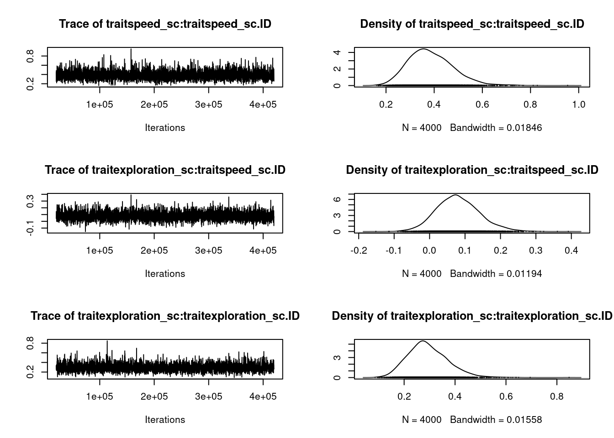
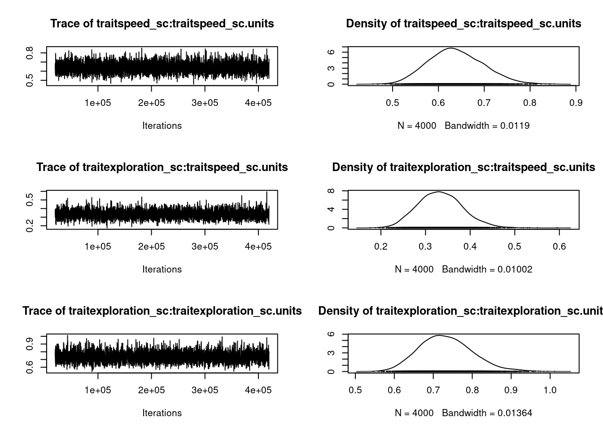
summary(mcmc_us)
Iterations = 20001:419901
Thinning interval = 100
Sample size = 4000
DIC: 1596.726
G-structure: ~us(trait):ID
post.mean l-95% CI u-95% CI eff.samp
traitspeed_sc:traitspeed_sc.ID 0.38670 0.2185 0.5691 4000
traitexploration_sc:traitspeed_sc.ID 0.08035 -0.0333 0.2091 4000
traitspeed_sc:traitexploration_sc.ID 0.08035 -0.0333 0.2091 4000
traitexploration_sc:traitexploration_sc.ID 0.29360 0.1537 0.4545 4000
R-structure: ~us(trait):units
post.mean l-95% CI u-95% CI
traitspeed_sc:traitspeed_sc.units 0.6383 0.5249 0.7500
traitexploration_sc:traitspeed_sc.units 0.3332 0.2408 0.4318
traitspeed_sc:traitexploration_sc.units 0.3332 0.2408 0.4318
traitexploration_sc:traitexploration_sc.units 0.7329 0.6054 0.8652
eff.samp
traitspeed_sc:traitspeed_sc.units 4000
traitexploration_sc:traitspeed_sc.units 4000
traitspeed_sc:traitexploration_sc.units 4000
traitexploration_sc:traitexploration_sc.units 4000
Location effects: cbind(speed_sc, exploration_sc) ~ trait - 1 + trait:assay_rep_sc + trait:body_size_sc
post.mean l-95% CI u-95% CI eff.samp pMCMC
traitspeed_sc 0.002011 -0.167262 0.164569 4000 0.996
traitexploration_sc 0.001389 -0.147113 0.153418 4000 0.999
traitspeed_sc:assay_rep_sc -0.036231 -0.110201 0.043971 4000 0.360
traitexploration_sc:assay_rep_sc -0.022918 -0.103150 0.064172 4000 0.589
traitspeed_sc:body_size_sc 0.103544 -0.053667 0.253207 4000 0.199
traitexploration_sc:body_size_sc 0.075044 -0.075995 0.221211 5131 0.313mcmc_prop_f <- mcmc_us$VCV[, 1] /
(mcmc_us$VCV[, 1] + mcmc_us$VCV[, 5])
plot(mcmc_prop_f)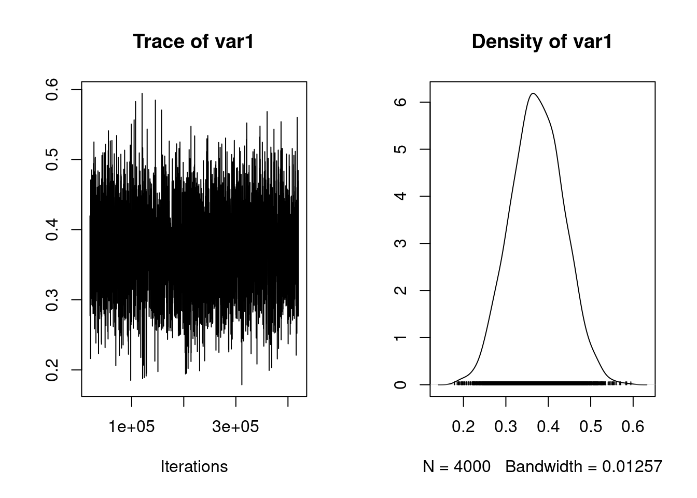
posterior.mode(mcmc_prop_f) var1
0.3450241 HPDinterval(mcmc_prop_f) lower upper
var1 0.2497688 0.4897519
attr(,"Probability")
[1] 0.95mcmc_prop_e <- mcmc_us$VCV[, 4] /
(mcmc_us$VCV[, 4] + mcmc_us$VCV[, 8])
plot(mcmc_prop_e)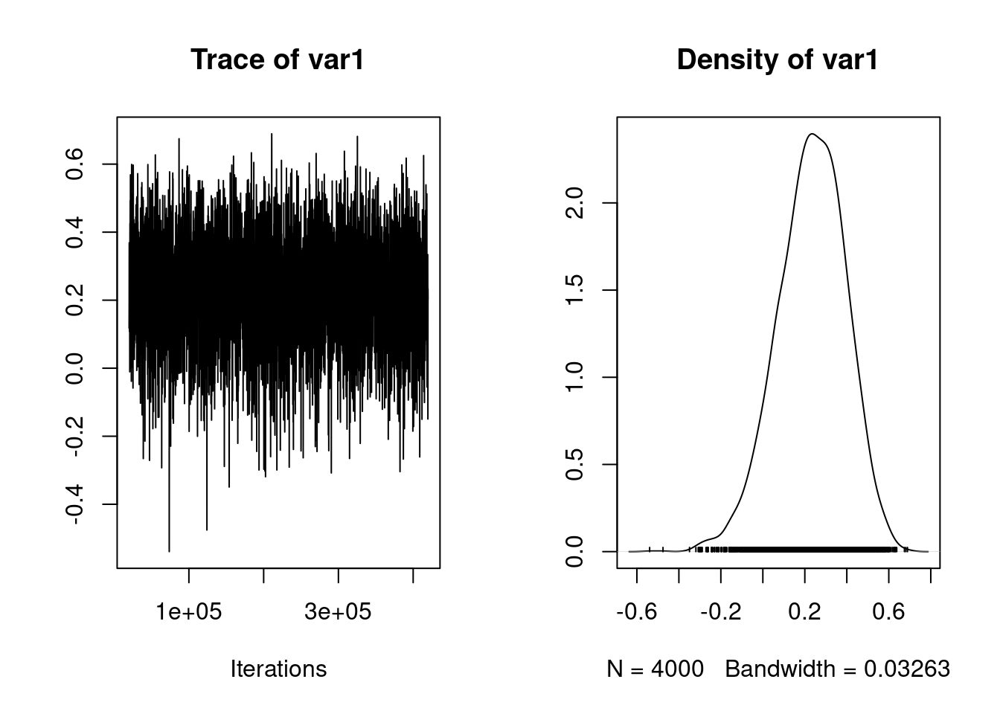
posterior.mode(mcmc_prop_e) var1
0.279527 HPDinterval(mcmc_prop_e) lower upper
var1 0.1609295 0.4000869
attr(,"Probability")
[1] 0.95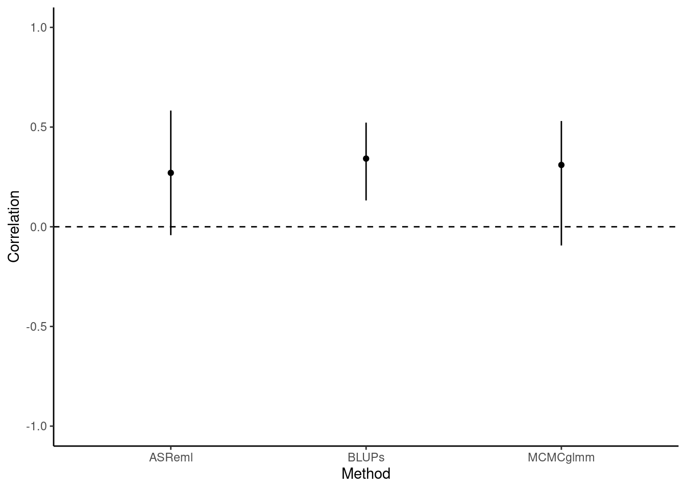
posterior.mode(mcmc_cor_fe) var1
0.3100281 HPDinterval(mcmc_cor_fe) lower upper
var1 -0.09380121 0.5304097
attr(,"Probability")
[1] 0.95df_cor[3, 1] <- "MCMCglmm"
df_cor[3, -1] <- c(posterior.mode(mcmc_cor_fe), HPDinterval(mcmc_cor_fe))
rownames(df_cor) <- NULL
ggplot(df_cor, aes(x = Method, y = Correlation)) +
geom_point() +
geom_linerange(aes(ymin = low, ymax = high)) +
ylim(-1, 1) +
geom_hline(yintercept = 0, linetype = 2) +
theme_classic()
| Method | Correlation | low | high |
|---|---|---|---|
| ASReml | 0.270 | -0.042 | 0.583 |
| BLUPs | 0.342 | 0.132 | 0.522 |
| MCMCglmm | 0.310 | -0.094 | 0.530 |
8.2.5 Happy multivariate models